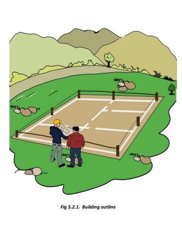
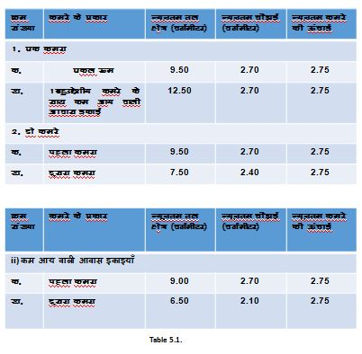
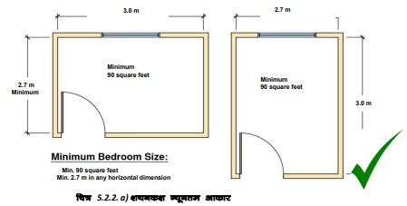
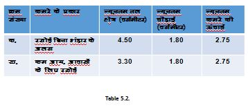
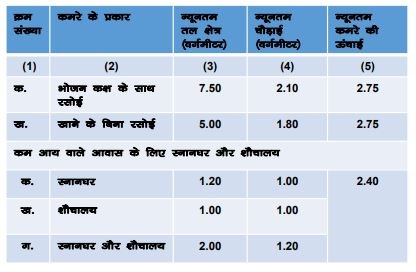

एनबीसी 2016 और एसपी 73 के अनुसार न्यूनतम आकार की आवश्यकताएं और विषेश विवरण
>
 जब शयनकक्ष के न्यूनतम आकार की बात आती है, तो कोड के अनुसार फर्श का क्षेत्रफल 90 वर्ग फुट से कम नहीं होना चाहिए और कोई भी क्षैतिज माप 9 फुट से कम नहीं होनी चाहिए।
कम आय वाले आवासों में बहुउद्देशीय, रहने योग्य कमरों में खाना पकाने के लिए जगह उपलब्ध कराई जाएगी।
उदाहरण के लिए, एकल शयनकक्ष की योजना ऊपर दी गई है।
